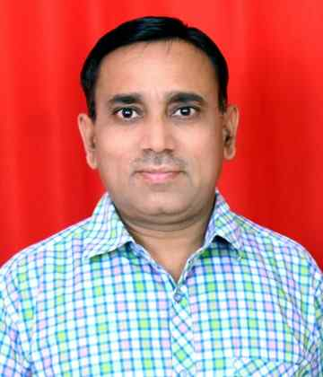

Assistant Professor
Artificial Intelligence | Large Language Models (LLMs) | Natural Language Processing (NLP)
📍 Raigad, India
Harsha Gaikwad is an Assistant Professor in the Department of Computer Engineering at Dr. Babasaheb Ambedkar Technological University (DBATU) , Lonere, India. She has 10 years of teaching experience and is dedicated to helping students build strong knowledge and understanding. Her research interests include Artificial Intelligence, particularly Large Language Models (LLMs), and emerging technologies. She has published research papers in reputed journals such as SN Computer Science and Language Resources and Evaluation. She holds a B.Tech in Computer Engineering from Dr. Babasaheb Ambedkar Technological University (2012), an M.Tech in Computer Science and Engineering from Shivaji University (2015), and a Ph.D. from Dr. Babasaheb Ambedkar Technological University (2025). Her doctoral research focused on adapting general-purpose Large Language Models for domain-specific tasks. She is passionate about learning new technologies and applying them to solve real-world problems.